Aprendé los fundamentos de la luthería construyendo una guitarra acústica desde cero, guiado por técnicas tradicionales y herramientas profesionales.
InscribirmeUn curso pensado para quienes desean iniciarse en la construcción artesanal de instrumentos, combinando práctica, precisión y conocimiento técnico.

Descubrí cada etapa del proceso de construcción de la guitarra criolla, desde el diseño inicial hasta los detalles finales.
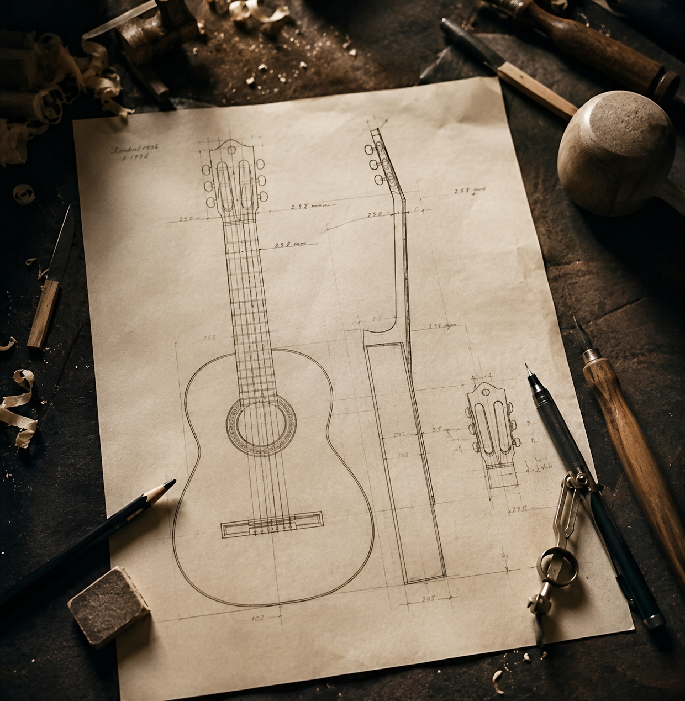
Aprendé a interpretar planos ydefinir proporciones de la estructura de la guitarra
Conocé las propiedades de las maderas y materiales utilizados en luthería tradicional
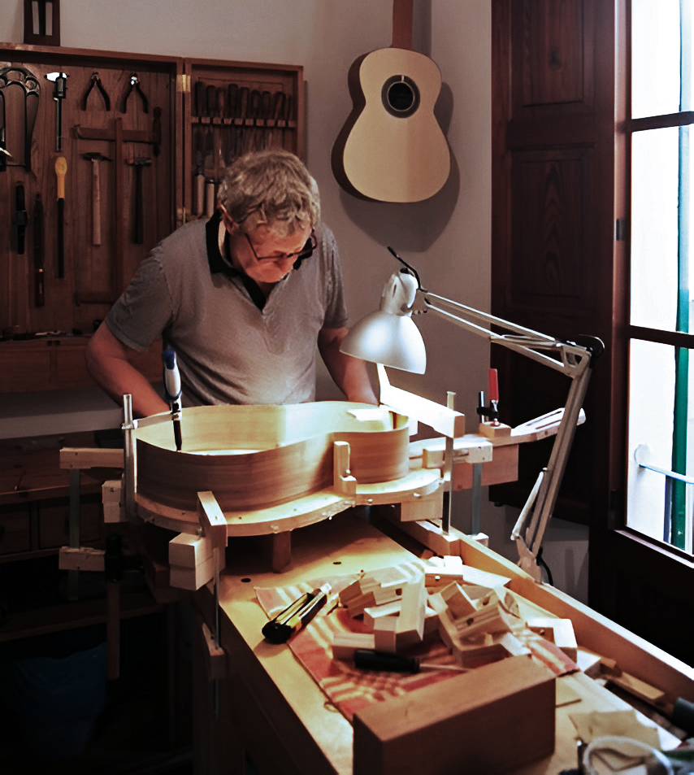
Desarrollá las técnicas de corte, ensamblado, encolado y armado de tu guitarra
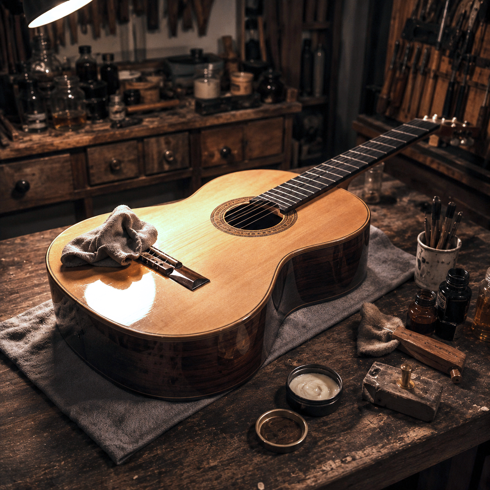
Realizá el lijado, acabado, calibración y ajustes finales para lograr una guitarra perfecta
El taller cuenta con todas las herramientas profesionales necesarias. Los materiales están incluidos en el precio del curso.
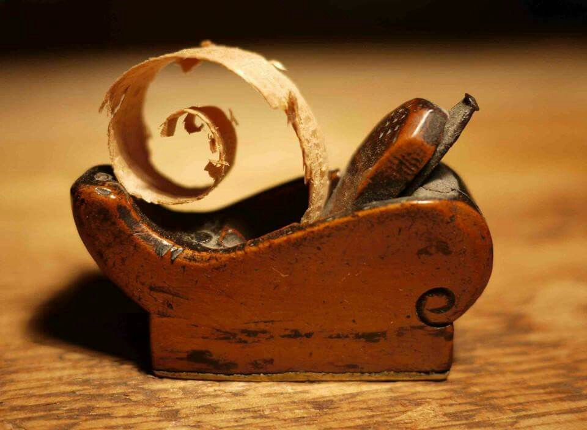
Cepillos de luthería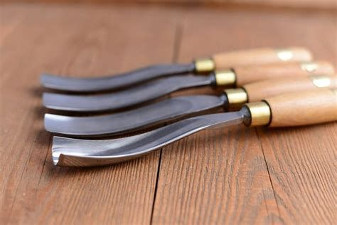
Formones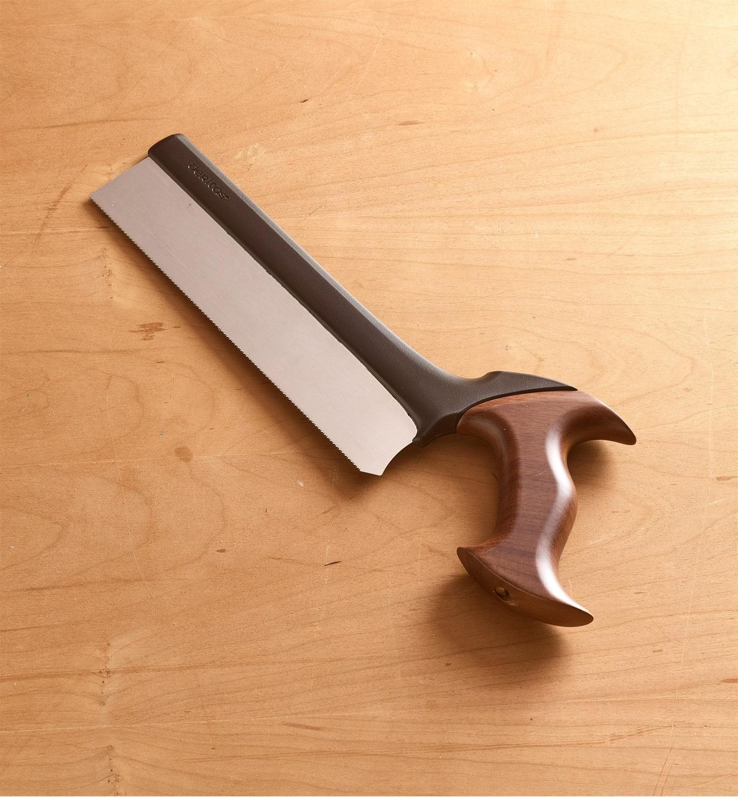
Sierras de marquetería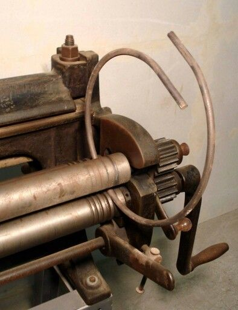
Dobladoras de aros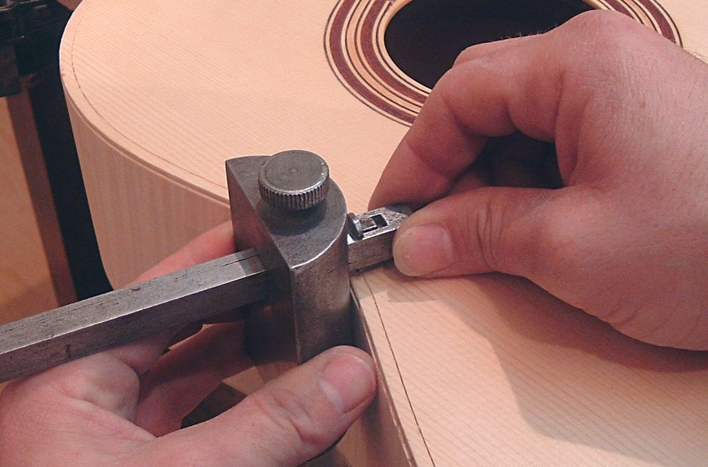
Calibres de precisión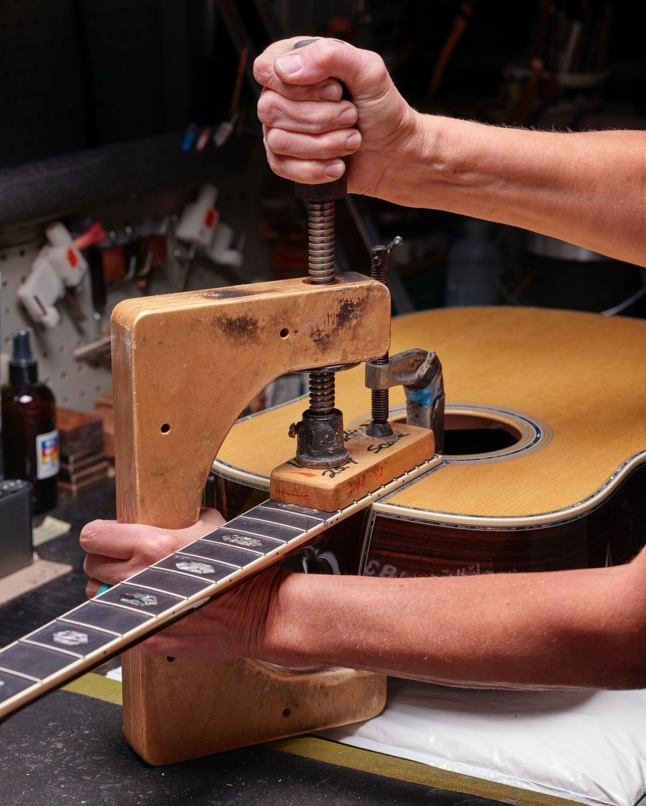
Prensas y sargentos16 clases · 2 veces por semana · 8 semanas
Presentación del espacio de trabajo, las herramientas principales y los conceptos básicos de la luthería. Historia de la guitarra y sus variantes constructivas.
Lectura e interpretación de planos de luthería. Trazado de la forma de la guitarra, proporciones del cuerpo, escala y posición del puente.
Criterios de selección de la tapa armónica (abeto o cedro), fondo y aros (palisandro o arce) y mástil (caoba o cedro). Preparación y escuadrado de piezas.
Unión y cepillado de la tapa. Calibración del espesor. Trazado y recorte de la roseta. Introducción al concepto de varetado y su función acústica.
Preparación y encolado de varetas. Tipos de varetado (en abanico, paralelo). Ajuste y control de la flexibilidad de la tapa para optimizar la proyección sonora.
Técnica de doblado con calor. Uso de la dobladora de aros. Montaje en la horma. Preparación de los bloques de unión taco superior e inferior.
Encolado del fondo a los aros. Preparación e instalación de las contrafuertes internas. Encolado de la tapa. Control de simetría y geometría de la caja.
Fresado del canal de binding. Selección y preparación del filete. Encolado y nivelado del binding en tapa, fondo y aros.
Trazado y recorte del mástil. Tallado del cañón y la voluta. Preparación de la caja de clavijero. Fresado del canal del alma.
Preparación del diapasón en ébano o palisandro. Cálculo y marcado de la posición de los trastes. Instalación y nivelado de trastes.
Ajuste del ángulo del mástil. Corte del encaje de unión. Verificación de la escala y la acción. Encolado y refuerzo de la unión.
Tallado del puente en madera de palisandro. Preparación de la ranura de la cejuela de hueso. Encolado y ajuste del puente en la tapa.
Lijado progresivo de toda la guitarra. Corrección de imperfecciones. Preparación de poros de la madera para recibir el barniz.
Aplicación de barniz natural (goma laca o nitrocelulosa). Técnica de muñequillado. Capas sucesivas con lijado intermedio. Pulido final.
Montaje de clavijeros. Instalación de cejuela de hueso en cero y en el puente. Primera instalación de cuerdas y ajuste de la tensión del alma.
Ajuste de la acción de cuerdas y afinación. Presentación de las guitarras terminadas. Retroalimentación del docente y cierre del curso.
Al final del curso te llevás una guitarra criolla construida enteramente por vos, con maderas nobles y técnicas profesionales.
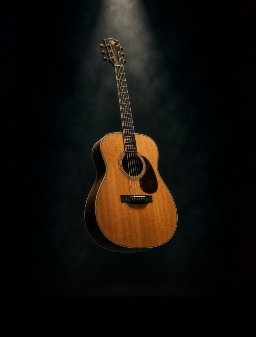

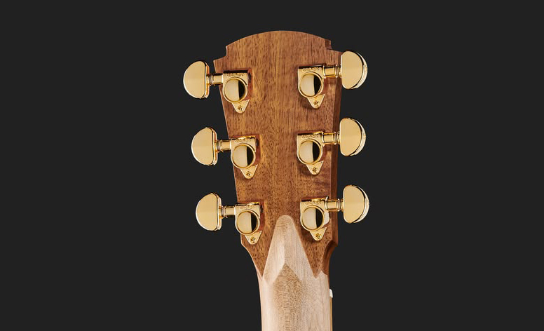
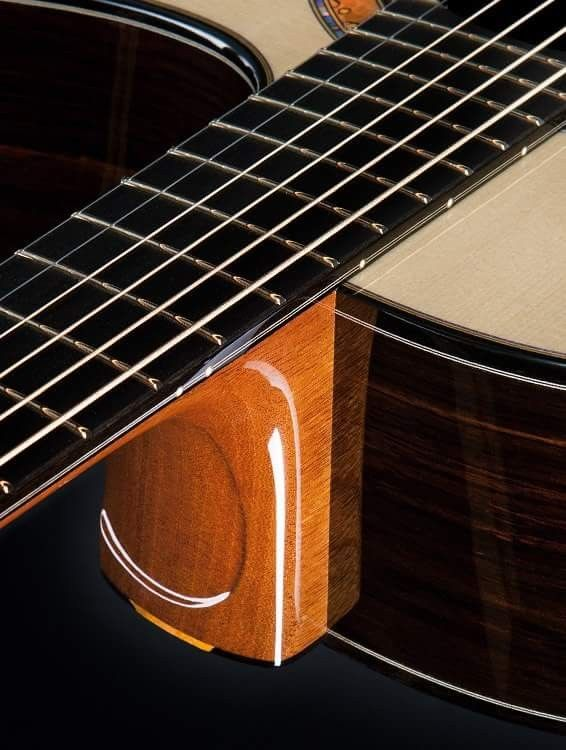
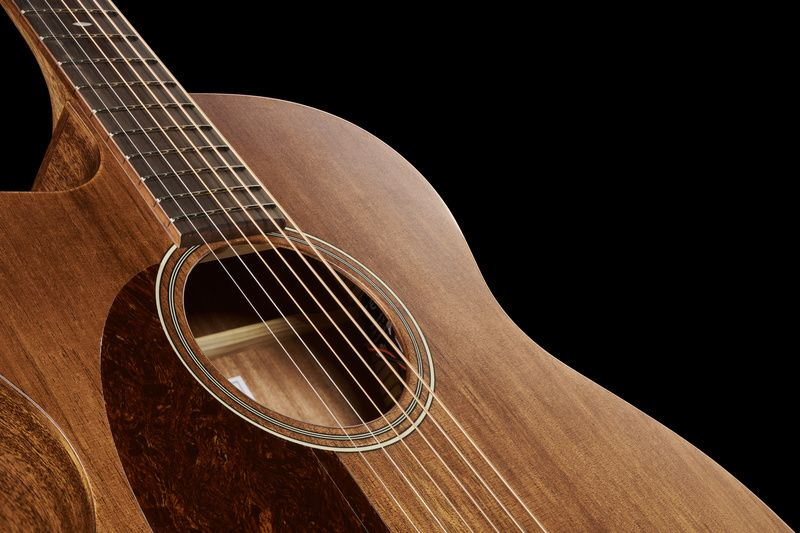
Precio del curso
Desde $100.000
Materiales incluidos · Grupos reducidos
Inscribirme ahora¿Tenés dudas? Escribinos